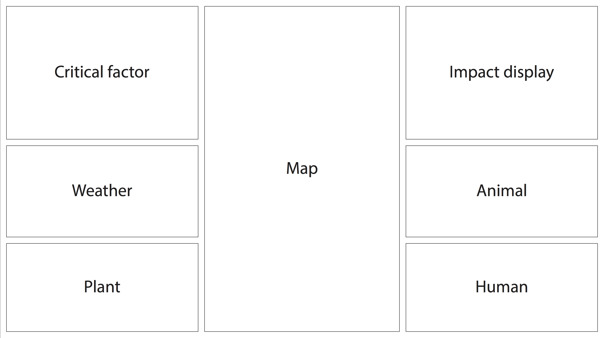
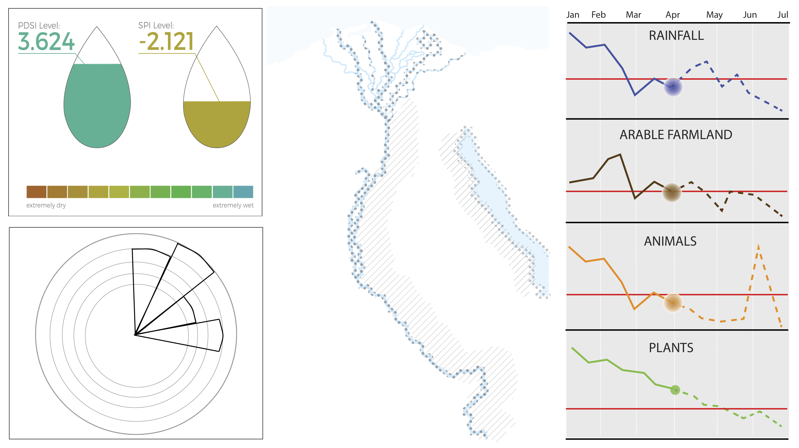
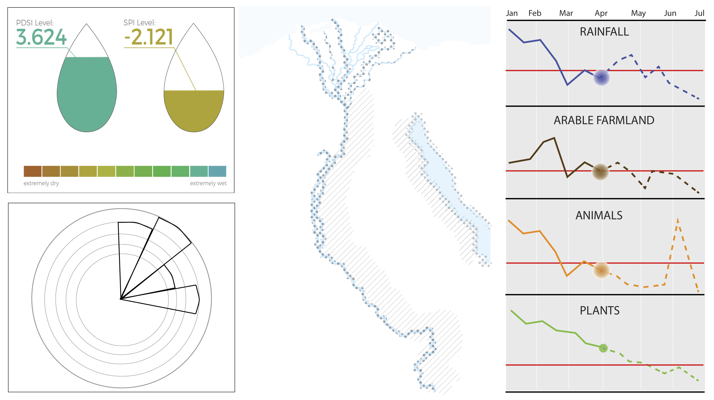
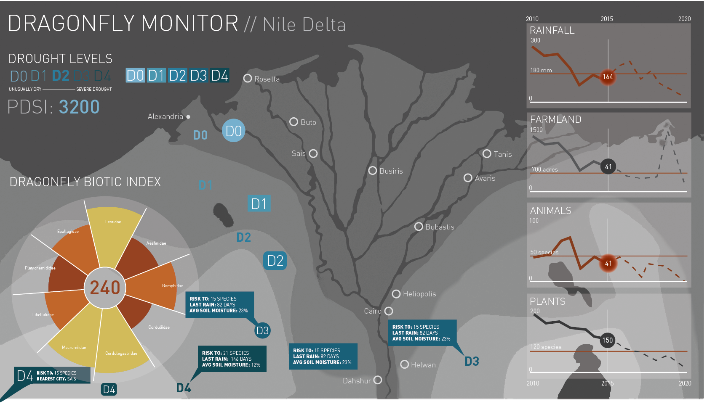
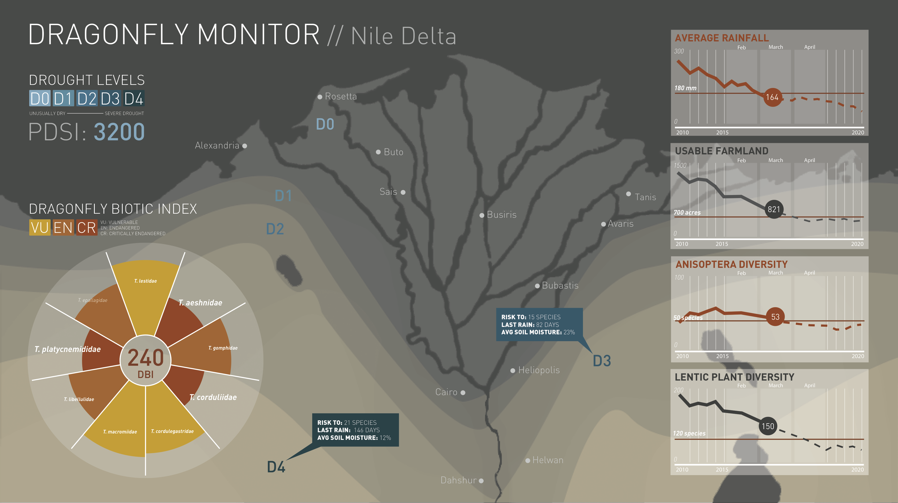

Interaction Design Project: Designing a Dashbaord
Spring 2015
- Toolkit:
- Research /
- Sketching /
- Adobe Illustrator
In the class Interaction Design Studio, we had a team assignment that was to create a dashboard for a watchdog organization of a particular region of the world that could be displayed on an Apple Thunderbolt monitor. My team was given North Africa and we chose to focus on the Nile Delta region. The specifications of the dashboard were that it must include a critical factor, an impact display, data on a human factor, data on plant life, data on animal life, and data on weather. The data must be historical as well as include future predictions. We focused on the dragonfly and underwater species and rainfall. Our critical factor was the decline of dragonfly species due to a shortage of fresh water in the region.
Because there was so much data to fit on such a relatively small screen size, we were faced with a challenge. The dashboard also couldn't be interactive so all of the data must be presented above the fold. This was a team project so had to learn how to work on designs together as a team, pass on work to team members, critique each other's designs, and learn to discuss all of our ideas in an efficient and productive way.
We went through several concepts of the dashboard before iterating on small changes for the final design. Below you can see the different concepts we explored.
 

Below I worked on several iterations of the map callouts before settling on our final concept. Realizing that something as small as the callout on the dashboard and iterating heavily on that one thing made all the different in the look and feel of our final dashboard.
Below is a copy of our final iteration of the dashboard. We also added an animation that enhances the dashboard by showing changes on the map of the region over time.
